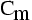
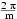
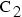
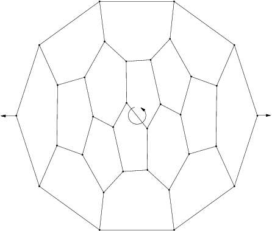
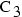
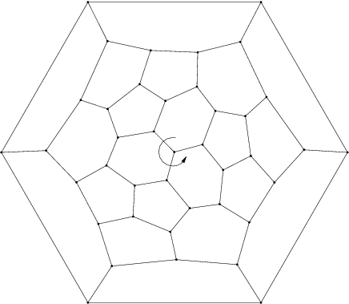
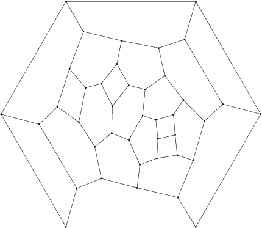
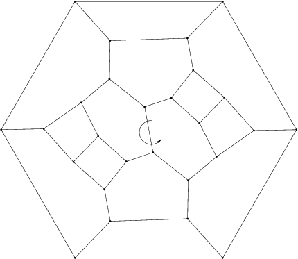

The series 
The group is the group of rotation of angle  around a fixed axis.
Features
- Algebraic structure: it is the cyclic group of order m
- Kind of elements
- m elements: rotation around a fixed axis
- Particular cases
- if m=1, then the group is trivial.
- Examples
- First fulleren of symmetry :

- First Fulleren of symmetry :

- First 4n of symmetry :

- First 4n of symmetry :
